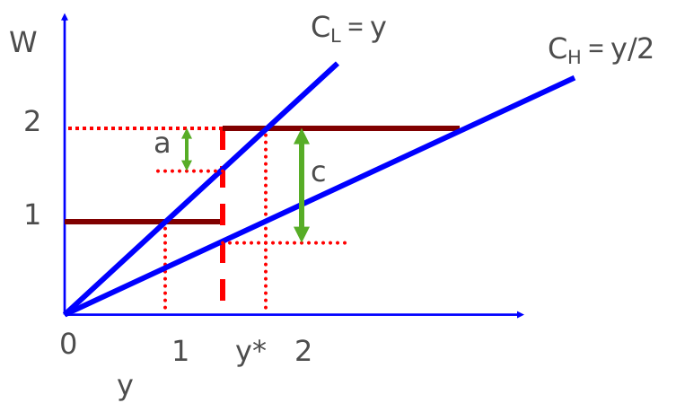
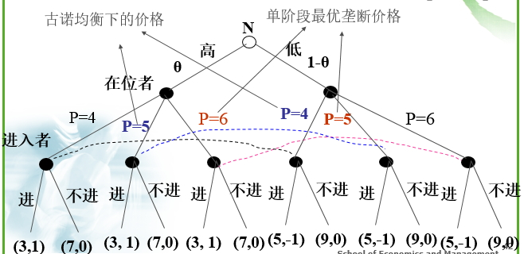

<!DOCTYPE HTML>
<html lang="" >
    <head>
        <title>信号传递 · GitBook</title>
        <meta charset="UTF-8">
        <meta http-equiv="X-UA-Compatible" content="IE=edge" />
        <meta content="text/html; charset=utf-8" http-equiv="Content-Type">
        <meta name="description" content="">
        <meta name="generator" content="GitBook 3.1.1">
        
        
        
    
    <link rel="stylesheet" href="../gitbook/style.css">

    
            
                
                <link rel="stylesheet" href="../gitbook/gitbook-plugin-highlight/website.css">
                
            
                
                <link rel="stylesheet" href="../gitbook/gitbook-plugin-search/search.css">
                
            
                
                <link rel="stylesheet" href="../gitbook/gitbook-plugin-fontsettings/website.css">
                
            
        

    

    
        
    
        
    
        
    
        
    
        
    
        
    

        
    
    
    <meta name="HandheldFriendly" content="true"/>
    <meta name="viewport" content="width=device-width, initial-scale=1, user-scalable=no">
    <meta name="apple-mobile-web-app-capable" content="yes">
    <meta name="apple-mobile-web-app-status-bar-style" content="black">
    <link rel="apple-touch-icon-precomposed" sizes="152x152" href="../gitbook/images/apple-touch-icon-precomposed-152.png">
    <link rel="shortcut icon" href="../gitbook/images/favicon.ico" type="image/x-icon">

    
    <link rel="next" href="section4.html" />
    
    
    <link rel="prev" href="section2.html" />
    

    </head>
    <body>
        
<div class="book">
    <div class="book-summary">
        
            
<div id="book-search-input" role="search">
    <input type="text" placeholder="Type to search" />
</div>

            
                <nav role="navigation">
                


<ul class="summary">
    
    

    

    
        
        
    
        <li class="chapter " data-level="1.1" data-path="../">
            
                <a href="../">
            
                    
                    简介
            
                </a>
            

            
        </li>
    
        <li class="chapter " data-level="1.2" data-path="../chapter0/">
            
                <a href="../chapter0/">
            
                    
                    第0章 导论
            
                </a>
            

            
            <ul class="articles">
                
    
        <li class="chapter " data-level="1.2.1" data-path="../chapter0/section1.html">
            
                <a href="../chapter0/section1.html">
            
                    
                    导论
            
                </a>
            

            
        </li>
    

            </ul>
            
        </li>
    
        <li class="chapter " data-level="1.3" data-path="../chapter1/">
            
                <a href="../chapter1/">
            
                    
                    第1章 博弈论基本概念
            
                </a>
            

            
            <ul class="articles">
                
    
        <li class="chapter " data-level="1.3.1" data-path="../chapter1/section1.html">
            
                <a href="../chapter1/section1.html">
            
                    
                    代表性博弈模型
            
                </a>
            

            
        </li>
    
        <li class="chapter " data-level="1.3.2" data-path="../chapter1/section2.html">
            
                <a href="../chapter1/section2.html">
            
                    
                    博弈的基本概念
            
                </a>
            

            
        </li>
    
        <li class="chapter " data-level="1.3.3" data-path="../chapter1/section3.html">
            
                <a href="../chapter1/section3.html">
            
                    
                    博弈的分类
            
                </a>
            

            
        </li>
    
        <li class="chapter " data-level="1.3.4" data-path="../chapter1/section4.html">
            
                <a href="../chapter1/section4.html">
            
                    
                    博弈的表述
            
                </a>
            

            
        </li>
    

            </ul>
            
        </li>
    
        <li class="chapter " data-level="1.4" data-path="../chapter2/">
            
                <a href="../chapter2/">
            
                    
                    第2章 完全信息静态博弈
            
                </a>
            

            
            <ul class="articles">
                
    
        <li class="chapter " data-level="1.4.1" data-path="../chapter2/section1.html">
            
                <a href="../chapter2/section1.html">
            
                    
                    占优战略均衡
            
                </a>
            

            
        </li>
    
        <li class="chapter " data-level="1.4.2" data-path="../chapter2/section2.html">
            
                <a href="../chapter2/section2.html">
            
                    
                    重复剔除的占优战略均衡
            
                </a>
            

            
        </li>
    
        <li class="chapter " data-level="1.4.3" data-path="../chapter2/section3.html">
            
                <a href="../chapter2/section3.html">
            
                    
                    纳什均衡
            
                </a>
            

            
        </li>
    
        <li class="chapter " data-level="1.4.4" data-path="../chapter2/section4.html">
            
                <a href="../chapter2/section4.html">
            
                    
                    纯战略与混合战略纳什均衡
            
                </a>
            

            
        </li>
    

            </ul>
            
        </li>
    
        <li class="chapter " data-level="1.5" data-path="../chapter3/">
            
                <a href="../chapter3/">
            
                    
                    第3章 完全信息动态博弈
            
                </a>
            

            
            <ul class="articles">
                
    
        <li class="chapter " data-level="1.5.1" data-path="../chapter3/section1.html">
            
                <a href="../chapter3/section1.html">
            
                    
                    博弈的扩展式表述
            
                </a>
            

            
        </li>
    
        <li class="chapter " data-level="1.5.2" data-path="../chapter3/section2.html">
            
                <a href="../chapter3/section2.html">
            
                    
                    扩展式表述博弈的纳什均衡
            
                </a>
            

            
        </li>
    
        <li class="chapter " data-level="1.5.3" data-path="../chapter3/section3.html">
            
                <a href="../chapter3/section3.html">
            
                    
                    子博弈精炼纳什均衡
            
                </a>
            

            
        </li>
    
        <li class="chapter " data-level="1.5.4" data-path="../chapter3/section4.html">
            
                <a href="../chapter3/section4.html">
            
                    
                    重复博弈
            
                </a>
            

            
        </li>
    

            </ul>
            
        </li>
    
        <li class="chapter " data-level="1.6" data-path="../chapter4/">
            
                <a href="../chapter4/">
            
                    
                    第4章 不完全信息博弈
            
                </a>
            

            
            <ul class="articles">
                
    
        <li class="chapter " data-level="1.6.1" data-path="../chapter4/section1.html">
            
                <a href="../chapter4/section1.html">
            
                    
                    不完全信息静态博弈
            
                </a>
            

            
        </li>
    
        <li class="chapter " data-level="1.6.2" data-path="../chapter4/section2.html">
            
                <a href="../chapter4/section2.html">
            
                    
                    不完全信息动态博弈
            
                </a>
            

            
        </li>
    
        <li class="chapter " data-level="1.6.3" data-path="../chapter4/section3.html">
            
                <a href="../chapter4/section3.html">
            
                    
                    博弈论均衡概念简要总结
            
                </a>
            

            
        </li>
    

            </ul>
            
        </li>
    
        <li class="chapter " data-level="1.7" data-path="../chapter5/">
            
                <a href="../chapter5/">
            
                    
                    第5章 信息经济学引论
            
                </a>
            

            
            <ul class="articles">
                
    
        <li class="chapter " data-level="1.7.1" data-path="../chapter5/section1.html">
            
                <a href="../chapter5/section1.html">
            
                    
                    信息经济学概述
            
                </a>
            

            
        </li>
    
        <li class="chapter " data-level="1.7.2" data-path="../chapter5/section2.html">
            
                <a href="../chapter5/section2.html">
            
                    
                    与信息经济学相关的几个问题
            
                </a>
            

            
        </li>
    

            </ul>
            
        </li>
    
        <li class="chapter " data-level="1.8" data-path="./">
            
                <a href="./">
            
                    
                    第6章 逆向选择与信号传递
            
                </a>
            

            
            <ul class="articles">
                
    
        <li class="chapter " data-level="1.8.1" data-path="section1.html">
            
                <a href="section1.html">
            
                    
                    逆向选择问题
            
                </a>
            

            
        </li>
    
        <li class="chapter " data-level="1.8.2" data-path="section2.html">
            
                <a href="section2.html">
            
                    
                    市场信号
            
                </a>
            

            
        </li>
    
        <li class="chapter active" data-level="1.8.3" data-path="section3.html">
            
                <a href="section3.html">
            
                    
                    信号传递
            
                </a>
            

            
        </li>
    
        <li class="chapter " data-level="1.8.4" data-path="section4.html">
            
                <a href="section4.html">
            
                    
                    信息甄别
            
                </a>
            

            
        </li>
    

            </ul>
            
        </li>
    
        <li class="chapter " data-level="1.9" data-path="../chapter7/">
            
                <a href="../chapter7/">
            
                    
                    第7章 道德风险与委托代理理论
            
                </a>
            

            
            <ul class="articles">
                
    
        <li class="chapter " data-level="1.9.1" data-path="../chapter7/section1.html">
            
                <a href="../chapter7/section1.html">
            
                    
                    道德风险
            
                </a>
            

            
        </li>
    
        <li class="chapter " data-level="1.9.2" data-path="../chapter7/section2.html">
            
                <a href="../chapter7/section2.html">
            
                    
                    委托代理理论
            
                </a>
            

            
        </li>
    
        <li class="chapter " data-level="1.9.3" data-path="../chapter7/section3.html">
            
                <a href="../chapter7/section3.html">
            
                    
                    激励机制设计
            
                </a>
            

            
        </li>
    

            </ul>
            
        </li>
    
        <li class="chapter " data-level="1.10" data-path="../chapter8/">
            
                <a href="../chapter8/">
            
                    
                    第8章 信息搜寻
            
                </a>
            

            
            <ul class="articles">
                
    
        <li class="chapter " data-level="1.10.1" data-path="../chapter8/section1.html">
            
                <a href="../chapter8/section1.html">
            
                    
                    价格离散
            
                </a>
            

            
        </li>
    
        <li class="chapter " data-level="1.10.2" data-path="../chapter8/section2.html">
            
                <a href="../chapter8/section2.html">
            
                    
                    信息搜寻原理
            
                </a>
            

            
        </li>
    
        <li class="chapter " data-level="1.10.3" data-path="../chapter8/section3.html">
            
                <a href="../chapter8/section3.html">
            
                    
                    搜寻与战略地位
            
                </a>
            

            
        </li>
    

            </ul>
            
        </li>
    

    

    <li class="divider"></li>

    <li>
        <a href="https://www.gitbook.com" target="blank" class="gitbook-link">
            Published with GitBook
        </a>
    </li>
</ul>


                </nav>
            
        
    </div>

    <div class="book-body">
        
            <div class="body-inner">
                
                    

<div class="book-header" role="navigation">
    

    <!-- Title -->
    <h1>
        <i class="fa fa-circle-o-notch fa-spin"></i>
        <a href=".." >信号传递</a>
    </h1>
</div>


                    <div class="page-wrapper" tabindex="-1" role="main">
                        <div class="page-inner">
                            
<div id="book-search-results">
    <div class="search-noresults">
    
                                <section class="normal markdown-section">
                                
                                <h1 id="63&#x4FE1;&#x53F7;&#x4F20;&#x9012;">6.3&#x4FE1;&#x53F7;&#x4F20;&#x9012;</h1>
<h2 id="631&#x65AF;&#x5BBE;&#x65AF;&#x52B3;&#x52A8;&#x529B;&#x5E02;&#x573A;&#x6A21;&#x578B;">6.3.1&#x65AF;&#x5BBE;&#x65AF;&#x52B3;&#x52A8;&#x529B;&#x5E02;&#x573A;&#x6A21;&#x578B;</h2>
<h3 id="&#x4FE1;&#x53F7;&#x4F20;&#x9012;&#x8FC7;&#x7A0B;">&#x4FE1;&#x53F7;&#x4F20;&#x9012;&#x8FC7;&#x7A0B;</h3>
<blockquote>
<p>1.&#x6C42;&#x804C;&#x8005;&#x884C;&#x52A8;&#xFF0C;&#x51B3;&#x5B9A;&#x81EA;&#x5DF1;&#x7684;&#x53D7;&#x6559;&#x80B2;&#x7A0B;&#x5EA6;&#x5E76;&#x4F20;&#x9012;&#x7ED9;&#x96C7;&#x4E3B;&#xFF0C;&#x6C42;&#x804C;&#x8005;&#x652F;&#x4ED8;&#x76F8;&#x5E94;&#x7684;&#x4FE1;&#x53F7;&#x4F20;&#x9012;&#x6216;&#x793A;&#x610F;&#x6210;&#x672C;&#x3002;</p>
<p>2.&#x96C7;&#x4E3B;&#x884C;&#x52A8;&#xFF0C;&#x89C2;&#x5BDF;&#x5230;&#x6C42;&#x804C;&#x8005;&#x53D7;&#x6559;&#x80B2;&#x7A0B;&#x5EA6;&#x7684;&#x9AD8;&#x4F4E;&#xFF0C;&#x5E76;&#x6839;&#x636E;&#x53D7;&#x6559;&#x80B2;&#x7A0B;&#x5EA6;&#x4E0E;&#x5B9E;&#x9645;&#x80FD;&#x529B;&#x4E4B;&#x95F4;&#x76F8;&#x5173;&#x7A0B;&#x5EA6;&#x7684;&#x6982;&#x7387;&#x5224;&#x65AD;&#xFF0C;&#x51B3;&#x5B9A;&#x96C7;&#x5458;&#x5DE5;&#x8D44;&#x6C34;&#x5E73;&#x3002;</p>
</blockquote>
<h3 id="&#x4FE1;&#x53F7;&#x4F20;&#x9012;&#x7EB3;&#x4EC0;&#x5747;&#x8861;&#x7684;&#x6761;&#x4EF6;">&#x4FE1;&#x53F7;&#x4F20;&#x9012;&#x7EB3;&#x4EC0;&#x5747;&#x8861;&#x7684;&#x6761;&#x4EF6;</h3>
<blockquote>
<p>1.&#x5728;&#x5B58;&#x5728;&#x4FE1;&#x53F7;&#x4F20;&#x9012;&#x6210;&#x672C;&#x548C;&#x5BF9;&#x4E0D;&#x540C;&#x6559;&#x80B2;&#x6C34;&#x5E73;&#x7684;&#x52B3;&#x52A8;&#x529B;&#x5B9E;&#x884C;&#x4E0D;&#x540C;&#x7684;&#x5DE5;&#x8D44;&#x5F85;&#x9047;&#x7684;&#x60C5;&#x51B5;&#x4E0B;&#xFF0C;&#x6C42;&#x804C;&#x8005;&#x6CA1;&#x6709;&#x52A8;&#x673A;&#x53BB;&#x6539;&#x53D8;&#x4ED6;&#x4EEC;&#x7684;&#x4FE1;&#x53F7;&#x4F20;&#x9012;&#x51B3;&#x7B56;&#x3002;</p>
<p>2.&#x96C7;&#x4E3B;&#x8BA4;&#x4E3A;&#x81EA;&#x5DF1;&#x5BF9;&#x4FE1;&#x53F7;&#x7684;&#x5224;&#x65AD;&#x662F;&#x6B63;&#x786E;&#x7684;&#xFF0C;&#x800C;&#x4E14;&#x96C7;&#x4E3B;&#x5236;&#x5B9A;&#x7684;&#x5DE5;&#x8D44;&#x6C34;&#x5E73;&#x603B;&#x662F;&#x4F7F;&#x81EA;&#x5DF1;&#x83B7;&#x5F97;&#x9884;&#x671F;&#x7684;&#x6B63;&#x5E38;&#x5229;&#x6DA6;&#x3002;</p>
</blockquote>
<h2 id="632&#x5206;&#x79BB;&#x5747;&#x8861;">6.3.2&#x5206;&#x79BB;&#x5747;&#x8861;</h2>
<p>&#x80CC;&#x666F;&#x6761;&#x4EF6;</p>
<blockquote>
<p>&#x5047;&#x8BBE;&#x96C7;&#x4E3B;&#x548C;&#x6C42;&#x804C;&#x8005;&#x90FD;&#x662F;&#x98CE;&#x9669;&#x4E2D;&#x6027;&#x7684;&#xFF0C;&#x6C42;&#x804C;&#x8005;&#x53D7;&#x6559;&#x80B2;&#x7A0B;&#x5EA6;&#x53EF;&#x4EE5;&#x7528;y&#x6765;&#x8868;&#x793A;&#xFF0C;&#x5E76;&#x4E14;&#x5047;&#x8BBE;&#x4E24;&#x79CD;&#x7C7B;&#x578B;&#x7684;&#x6C42;&#x804C;&#x8005;&#x5B58;&#x5728;&#xFF1A;</p>
<p>1.L&#x578B;&#xFF1A;&#x751F;&#x4EA7;&#x80FD;&#x529B;PL&#xFF1D;1&#xFF0C;&#x5728;&#x4EBA;&#x7FA4;&#x4E2D;&#x7684;&#x6BD4;&#x91CD;&#xFF1D;q&#xFF0C;&#x5176;&#x63A5;&#x53D7;&#x6559;&#x80B2;&#x7684;&#x6210;&#x672C;&#x662F;&#xFF1A;CH&#xFF1D;y</p>
<p>2.H&#x578B;&#xFF1A;&#x751F;&#x4EA7;&#x80FD;&#x529B;PH&#xFF1D;2&#xFF0C;&#x5728;&#x4EBA;&#x7FA4;&#x4E2D;&#x7684;&#x6BD4;&#x91CD;&#xFF1D;1&#xFF0D;q&#xFF0C;&#x5176;&#x63A5;&#x53D7;&#x6559;&#x80B2;&#x7684;&#x6210;&#x672C;&#x662F;&#xFF1A;CH&#xFF1D;1/2 y</p>
</blockquote>
<p>&#x5728;&#x5B8C;&#x5168;&#x4FE1;&#x606F;&#x60C5;&#x51B5;&#x4E0B;</p>
<blockquote>
<p>&#x96C7;&#x4E3B;&#x53EF;&#x4EE5;&#x89C2;&#x5BDF;&#x5230;&#x6BCF;&#x4E2A;&#x5DE5;&#x4EBA;&#x7684;&#x751F;&#x4EA7;&#x80FD;&#x529B;&#x7684;&#x9AD8;&#x4F4E;&#xFF0C;&#x6240;&#x4EE5;&#x4ED6;&#x4EEC;&#x652F;&#x4ED8;&#x7ED9;&#x6BCF;&#x4E2A;&#x5DE5;&#x4EBA;&#x7684;&#x5DE5;&#x8D44;&#x7B49;&#x4E8E;&#x5DE5;&#x4EBA;&#x7684;&#x8FB9;&#x9645;&#x4EA7;&#x51FA;&#xFF1A;WL= PL =1 WH= PH =2</p>
</blockquote>
<p>&#x5728;&#x4E0D;&#x5B8C;&#x5168;&#x4FE1;&#x606F;&#x5E76;&#x4E14;&#x65E0;&#x4FE1;&#x53F7;&#x4F20;&#x9012;&#x60C5;&#x51B5;&#x4E0B;</p>
<blockquote>
<p>&#x652F;&#x4ED8;&#x7ED9;&#x6BCF;&#x4E2A;&#x5DE5;&#x4EBA;&#x540C;&#x6837;&#x7684;&#x5DE5;&#x8D44;,&#x5DE5;&#x8D44;W&#x7531;&#x6240;&#x6709;&#x6C42;&#x804C;&#x8005;&#x7684;&#x52A0;&#x6743;&#x5E73;&#x5747;&#x7684;&#x751F;&#x4EA7;&#x80FD;&#x529B;&#x6765;&#x51B3;&#x5B9A;&#xFF1A;<strong>W&#xFF1D;PLq+PH(1-q)=q+2(1-q)=2-q</strong></p>
</blockquote>
<p>&#x96C7;&#x4E3B;&#x5BF9;&#x6559;&#x80B2;&#x7A0B;&#x5EA6;&#x7684;&#x8BC4;&#x4EF7;</p>
<blockquote>
<p>&#x96C7;&#x4E3B;&#x8BA4;&#x4E3A;&#x53D7;&#x8FC7;&#x67D0;&#x4E2A;&#x7279;&#x522B;&#x6C34;&#x5E73;&#x7684;&#x6559;&#x80B2;&#xFF0C;&#x6211;&#x4EEC;&#x79F0;&#x4E4B;&#x4E3A;y*&#xFF0C;&#x53CA;&#x53D7;&#x8FC7;&#x6BD4;&#x8FD9;&#x4E2A;&#x6C34;&#x5E73;&#x66F4;&#x9AD8;&#x7684;&#x6559;&#x80B2;&#x7684;&#x5DE5;&#x4EBA;&#x90FD;&#x662F;&#x9AD8;&#x7D20;&#x8D28;&#x7684;&#x5DE5;&#x4EBA;&#xFF0C;&#x5176;&#x4ED6;&#x7684;&#x5DE5;&#x4EBA;&#x662F;&#x4F4E;&#x7D20;&#x8D28;&#x7684;&#x3002;</p>
<p>1.&#x5F53;y<y*时，雇主认为该工人是l型，支付w＝1的工资； 2.当y="">y<em>&#x65F6;&#xFF0C;&#x96C7;&#x4E3B;&#x8BA4;&#x4E3A;&#x8BE5;&#x5DE5;&#x4EBA;&#x4E3A;H&#x578B;&#xFF0C;&#x652F;&#x4ED8;W&#xFF1D;2&#x7684;&#x5DE5;&#x8D44;&#x3002;(&#x8FD9;&#x91CC;&#x5047;&#x8BBE;y</em>&gt;1)</y*时，雇主认为该工人是l型，支付w＝1的工资；></p>
</blockquote>
<p></p>
<p><strong>&#x5206;&#x79BB;&#x5747;&#x8861;&#x7684;&#x7ED3;&#x8BBA;</strong></p>
<p>1.<strong>&#x5206;&#x79BB;&#x5747;&#x8861;</strong></p>
<blockquote>
<p>&#x4E0D;&#x540C;&#x7C7B;&#x522B;&#x7684;&#x4EBA;&#x91C7;&#x53D6;&#x4E0D;&#x540C;&#x7684;&#x884C;&#x52A8;&#xFF0C;&#x505A;&#x51FA;&#x4E0D;&#x540C;&#x7684;&#x9009;&#x62E9;&#x3002;&#xFF08;&#x5206;&#x79BB;&#x5747;&#x8861;&#x662F;&#x552F;&#x4E00;&#x80FD;&#x5B9E;&#x73B0;&#x5E02;&#x573A;&#x6548;&#x7387;&#x7684;&#x5747;&#x8861;&#xFF09;
L&#x578B;&#x548C;H &#x578B;&#x6C42;&#x804C;&#x8005;&#x88AB;&#x6E05;&#x695A;&#x5730;&#x533A;&#x5206;&#x5F00;&#x6765;&#xFF0C;L&#x578B;&#x4E0D;&#x4F1A;&#x9009;&#x62E9;y=y*&#xFF0C;H&#x578B;&#x4E5F;&#x4E0D;&#x4F1A;&#x9009;&#x62E9;y=0&#x3002;</p>
</blockquote>
<p>2.<strong>&#x5747;&#x8861;&#x7684;&#x7ED3;&#x679C;&#x4E0D;&#x552F;&#x4E00;</strong></p>
<blockquote>
<p>&#x53EA;&#x8981;&#x96C7;&#x4E3B;&#x7684;&#x4FE1;&#x5FF5;&#x662F;&#x4EFB;&#x4F55;&#x4F4D;&#x4E8E;1&#x548C;2&#x4E4B;&#x95F4;&#x7684;y*&#x503C;&#xFF0C;&#x90FD;&#x4F1A;&#x51FA;&#x73B0;&#x5206;&#x79BB;&#x5747;&#x8861;&#x7684;&#x7ED3;&#x679C;&#xFF0C;&#x56E0;&#x6B64;&#x5B9E;&#x9645;&#x4E0A;&#x6709;&#x65E0;&#x7A77;&#x591A;&#x4E2A;&#x7ED3;&#x679C;&#x3002;</p>
</blockquote>
<p>3.<strong>&#x4E0D;&#x540C;&#x5747;&#x8861;&#x7ED3;&#x679C;&#xFF0C;L&#x578B;&#x548C;H&#x578B;&#x6C42;&#x804C;&#x8005;&#x5904;&#x5883;&#x4E0D;&#x540C;</strong></p>
<blockquote>
<p>&#x96C7;&#x4E3B;&#x7684;&#x4FE1;&#x5FF5;y<em>&#x8D8A;&#x9760;&#x8FD1;2&#xFF0C;H&#x578B;&#x6C42;&#x804C;&#x8005;&#x7684;&#x5904;&#x5883;&#x5C31;&#x8D8A;&#x574F;(&#x51C0;&#x6536;&#x76CA;&#xFF1D;2&#xFF0D;y</em>/2)&#xFF0C;&#x800C;L&#x578B;&#x6C42;&#x804C;&#x8005;&#x7684;&#x5883;&#x51B5;&#x59CB;&#x7EC8;&#x4E0D;&#x53D7;&#x5F71;&#x54CD;&#x3002;&#x800C;&#x96C7;&#x4E3B;&#x5219;&#x59CB;&#x7EC8;&#x83B7;&#x5F97;&#x6B63;&#x5E38;&#x5229;&#x6DA6;&#x3002;y*&#x8D8A;&#x63A5;&#x8FD1;1&#xFF0C;&#x5747;&#x8861;&#x7ED3;&#x679C;&#x8D8A;&#x4F18;&#x3002;</p>
</blockquote>
<p>4.<strong>&#x4E0E;&#x5B8C;&#x5168;&#x4FE1;&#x606F;&#x7684;&#x5747;&#x8861;&#x7ED3;&#x679C;&#x6BD4;&#x8F83;</strong></p>
<blockquote>
<p>&#x5B8C;&#x5168;&#x4FE1;&#x606F;&#x4E0B;&#xFF0C;&#x6C42;&#x804C;&#x4E0D;&#x7528;&#x652F;&#x4ED8;&#x4FE1;&#x53F7;&#x4F20;&#x9012;&#x6210;&#x672C;&#xFF0C;&#x4F46;&#x5374;&#x5F97;&#x5230;&#x4E86;&#x4E0E;&#x4FE1;&#x53F7;&#x4F20;&#x9012;&#x4E0B;&#x4E00;&#x6837;&#x7684;&#x5DE5;&#x8D44;&#xFF1A;WL=1&#xFF0C;WH=2&#x3002;&#x5728;&#x4E0D;&#x5B8C;&#x5168;&#x4FE1;&#x606F;&#x4E0B;&#xFF0C;&#x6C42;&#x804C;&#x8005;&#x56E0;&#x652F;&#x4ED8;&#x4FE1;&#x53F7;&#x4F20;&#x9012;&#x6210;&#x672C;&#x800C;&#x964D;&#x4F4E;&#x4E86;&#x798F;&#x5229;&#x6C34;&#x5E73;&#x3002;</p>
</blockquote>
<p>5.<strong>&#x4E0E;&#x4E0D;&#x5B8C;&#x5168;&#x4FE1;&#x606F;&#x65E0;&#x4FE1;&#x53F7;&#x4F20;&#x9012;&#x6210;&#x672C;&#x6BD4;&#x8F83;</strong></p>
<blockquote>
<p>&#x5728;&#x8FD9;&#x79CD;&#x60C5;&#x51B5;&#x4E0B;&#xFF0C;L&#x578B;&#x548C;H&#x578B;&#x5DE5;&#x4EBA;&#x7684;&#x5DE5;&#x8D44;&#x662F;&#x4E00;&#x6837;&#x7684;W=2-q&#x3002;&#x56E0;&#x4E3A;q&#x4ECB;&#x4E8E;0&#x548C;1&#x4E4B;&#x95F4;&#xFF0C;W&#x5C31;&#x4ECB;&#x4E8E;1&#x548C;2&#x4E4B;&#x95F4;&#x3002;&#x5728;&#x65E0;&#x4FE1;&#x53F7;&#x4F20;&#x9012;&#x4E0B;&#xFF0C;L&#x578B;&#x5DE5;&#x4EBA;&#x7684;&#x72B6;&#x51B5;&#x5F97;&#x5230;&#x4E86;&#x6539;&#x5584;&#xFF0C;&#x800C;H&#x578B;&#x5DE5;&#x4EBA;&#x6B63;&#x597D;&#x76F8;&#x53CD;&#x3002;</p>
</blockquote>
<p>6.<strong>&#x96C7;&#x4E3B;&#x59CB;&#x7EC8;&#x83B7;&#x5F97;&#x6B63;&#x5E38;&#x5229;&#x6DA6;</strong></p>
<blockquote>
<p>&#x96C7;&#x4E3B;&#x65E0;&#x6240;&#x8C13;&#x3002;&#x4E00;&#x65E6;&#x53C2;&#x4E0E;&#x4EBA;&#x5904;&#x4E8E;&#x5176;&#x4E2D;&#x67D0;&#x4E2A;&#x7EB3;&#x4EC0;&#x5747;&#x8861;&#x4E4B;&#x4E2D;&#xFF0C;&#x5C31;&#x6CA1;&#x6709;&#x4EFB;&#x4F55;&#x4EBA;&#x53EF;&#x4EE5;&#x901A;&#x8FC7;&#x5355;&#x65B9;&#x9762;&#x7684;&#x529B;&#x91CF;&#x8DF3;&#x51FA;&#x8FD9;&#x4E2A;&#x5747;&#x8861;&#x56DE;&#x5230;&#x5176;&#x4ED6;&#x72B6;&#x6001;&#xFF0C;&#x5373;&#x201C;&#x8DEF;&#x5F84;&#x4F9D;&#x8D56;&#x201D;&#x3002;</p>
</blockquote>
<h2 id="633&#x6DF7;&#x540C;&#x5747;&#x8861;">6.3.3&#x6DF7;&#x540C;&#x5747;&#x8861;</h2>
<p>&#x5B9A;&#x4E49;</p>
<blockquote>
<p>&#x6240;&#x6709;&#x4EBA;&#x90FD;&#x91C7;&#x53D6;&#x540C;&#x6837;&#x7684;&#x884C;&#x52A8;&#xFF0C;&#x505A;&#x51FA;&#x540C;&#x6837;&#x7684;&#x9009;&#x62E9;&#x3002;&#x6DF7;&#x540C;&#x5747;&#x8861;&#x5C06;&#x5BFC;&#x81F4;&#x9006;&#x5411;&#x9009;&#x62E9;.</p>
</blockquote>
<p>&#x89E3;&#x51B3;&#x65B9;&#x6848;</p>
<blockquote>
<p>&#x96C7;&#x4E3B;&#x6839;&#x636E;&#x4E0D;&#x540C;&#x7684;&#x6559;&#x80B2;&#x6C34;&#x5E73;&#xFF0C;&#x7ED9;&#x51FA;&#x591A;&#x79CD;&#xFF08;&#x6559;&#x80B2;&#x6C34;&#x5E73;&#xFF0C;&#x85AA;&#x916C;&#x6C34;&#x5E73;&#xFF09;&#x7EC4;&#x5408;&#xFF0C;&#x52B3;&#x52A8;&#x8005;&#x6839;&#x636E;&#x81EA;&#x5DF1;&#x7684;&#x80FD;&#x529B;&#x9009;&#x62E9;&#x3002;&#x4ECE;&#x800C;&#x201C;&#x5206;&#x79BB;&#x5747;&#x8861;&#x201D;&#x3002;</p>
</blockquote>
<h2 id="634&#x4FE1;&#x53F7;&#x4F20;&#x9012;&#x65B9;&#x5F0F;">6.3.4&#x4FE1;&#x53F7;&#x4F20;&#x9012;&#x65B9;&#x5F0F;</h2>
<h3 id="1&#x5E02;&#x573A;&#x8FDB;&#x5165;&#x963B;&#x6320;&#x535A;&#x5F08;">1.&#x5E02;&#x573A;&#x8FDB;&#x5165;&#x963B;&#x6320;&#x535A;&#x5F08;</h3>
<blockquote>
<p>&#x5728;&#x4F4D;&#x8005;&#x77E5;&#x9053;&#x81EA;&#x7136;&#x7684;&#x9009;&#x62E9;&#xFF08;&#x81EA;&#x5DF1;&#x7684;&#x7C7B;&#x578B;&#xFF09;&#xFF0C;&#x8FDB;&#x5165;&#x8005;&#x80FD;&#x89C2;&#x6D4B;&#x5230;&#x5728;&#x4F4D;&#x8005;&#x7684;&#x4EF7;&#x683C;&#x9009;&#x62E9;&#xFF0C;&#x4F46;&#x4E0D;&#x80FD;&#x89C2;&#x6D4B;&#x5230;&#x5728;&#x4F4D;&#x8005;&#x7684;&#x6210;&#x672C;&#x51FD;&#x6570;&#x3002;&#x4EF7;&#x683C;&#x9009;&#x62E9;&#x662F;&#x4E00;&#x79CD;&#x4FE1;&#x53F7;&#x3002;&#x5B8C;&#x5168;&#x4FE1;&#x606F;&#x6761;&#x4EF6;&#x4E0B;&#xFF0C;&#x82E5;&#x5728;&#x4F4D;&#x8005;&#x9AD8;&#x6210;&#x672C;&#x2014;&#x2014;&#x201C;&#x8FDB;&#x5165;&#x201D;&#xFF1B;&#x82E5;&#x5728;&#x4F4D;&#x8005;&#x4F4E;&#x6210;&#x672C;&#x2014;&#x2014;&#x4E0D;&#x8FDB;&#x5165;</p>
</blockquote>
<p></p>
<h3 id="2&#x5E7F;&#x544A;&#x7684;&#x4FE1;&#x53F7;&#x4F5C;&#x7528;">2.&#x5E7F;&#x544A;&#x7684;&#x4FE1;&#x53F7;&#x4F5C;&#x7528;</h3>
<blockquote>
<p>&#x6D88;&#x8D39;&#x8005;&#x5BF9;&#x4E8E;&#x5176;&#x719F;&#x6089;&#x7684;&#x67D0;&#x4E9B;&#x4EA7;&#x54C1;&#x7684;&#x5E7F;&#x544A;&#x66F4;&#x654F;&#x611F;&#x3002;&#x5382;&#x5546;&#x90FD;&#x5BF9;&#x540C;&#x4E00;&#x4EA7;&#x54C1;&#x5927;&#x505A;&#x5E7F;&#x544A;&#xFF0C;&#x4EE5;&#x671F;&#x6D88;&#x8D39;&#x8005;&#x5BF9;&#x8FD9;&#x4E9B;&#x4EA7;&#x54C1;&#x7684;&#x5E7F;&#x544A;&#x66F4;&#x4E3A;&#x654F;&#x611F;&#xFF0C;&#x5E76;&#x5728;&#x6B64;&#x57FA;&#x7840;&#x4E0A;&#x6539;&#x53D8;&#x6216;&#x5F71;&#x54CD;&#x6D88;&#x8D39;&#x8005;&#x7684;&#x6D88;&#x8D39;&#x504F;&#x597D;&#x548C;&#x6D88;&#x8D39;&#x6C34;&#x5E73;&#x3002;</p>
</blockquote>
<h3 id="3&#x4F01;&#x4E1A;&#x62C6;&#x501F;">3.&#x4F01;&#x4E1A;&#x62C6;&#x501F;</h3>
<blockquote>
<p>&#x771F;&#x6B63;&#x597D;&#x7684;&#x516C;&#x53F8;&#x901A;&#x8FC7;&#x5411;&#x94F6;&#x884C;&#x501F;&#x94B1;&#x6765;&#x589E;&#x5927;&#x81EA;&#x5DF1;<strong>&#x7834;&#x4EA7;</strong>&#x7684;&#x53EF;&#x80FD;&#x6027;&#xFF0C;&#x4EE4;&#x5176;&#x5B83;&#x5B9E;&#x9645;&#x4E0A;&#x4E0D;&#x597D;&#x7684;&#x516C;&#x53F8;&#x96BE;&#x4EE5;&#x6A21;&#x4EFF;&#x3002;&#x8FD9;&#x79CD;&#x8D1F;&#x503A;&#x6BD4;&#x4F8B;&#x7684;&#x589E;&#x52A0;&#x8981;&#x505A;&#x5230;&#x6070;&#x5230;&#x597D;&#x5904;&#xFF0C;&#x5B83;&#x65E2;&#x53EF;&#x4EE4;&#x5176;&#x5B83;&#x5B9E;&#x529B;&#x7A0D;&#x5F31;&#x7684;&#x516C;&#x53F8;&#x96BE;&#x4EE5;&#x6A21;&#x4EFF;&#xFF0C;&#x53C8;&#x4F7F;&#x81EA;&#x5DF1;&#x80FD;&#x591F;&#x627F;&#x53D7;&#x3002;&#x516C;&#x4F17;&#x8BC6;&#x522B;&#x51FA;&#x597D;&#x7684;&#x516C;&#x53F8;&#x4EE5;&#x540E;&#x7ADE;&#x76F8;&#x8D2D;&#x4E70;&#x80A1;&#x7968;&#xFF0C;&#x5BFC;&#x81F4;&#x516C;&#x53F8;&#x80A1;&#x7968;&#x4EF7;&#x683C;&#x4E0A;&#x6DA8;&#xFF0C;&#x7ED3;&#x679C;&#x8FD9;&#x5BB6;&#x8D1F;&#x503A;&#x516C;&#x53F8;&#x4F1A;&#x56E0;&#x5176;&#x80A1;&#x4EF7;&#x4E0A;&#x6DA8;&#x800C;&#x83B7;&#x8D44;&#x672C;&#x589E;&#x503C;&#xFF0C;&#x7834;&#x4EA7;&#x7684;&#x53EF;&#x80FD;&#x6027;&#x4E0B;&#x964D;&#x3002;</p>
</blockquote>
<h2 id="635&#x5E38;&#x89C1;&#x7684;&#x4FE1;&#x53F7;&#x4F20;&#x9012;&#x65B9;&#x6CD5;">6.3.5&#x5E38;&#x89C1;&#x7684;&#x4FE1;&#x53F7;&#x4F20;&#x9012;&#x65B9;&#x6CD5;</h2>
<blockquote>
<p><strong>&#x4EE3;&#x7406;&#x4EBA;</strong>&#x7528;&#x589E;&#x52A0;&#x4EA4;&#x6613;&#x8D39;&#x7528;&#xFF08;&#x9274;&#x5B9A;&#x4E66;&#x3001;&#x9274;&#x5B9A;&#x7A97;&#x53E3;&#x3001;&#x4FE1;&#x8A89;&#x7B49;&#xFF09;&#x7684;&#x65B9;&#x6CD5;&#x6D88;&#x9664;&#x53CC;&#x65B9;&#x7684;&#x4FE1;&#x606F;&#x4E0D;&#x5BF9;&#x79F0;&#xFF0C;&#x8FDB;&#x800C;&#x89E3;&#x51B3;<strong>&#x9006;&#x5411;&#x9009;&#x62E9;</strong>&#x548C;<strong>&#x5E02;&#x573A;&#x5931;&#x7075;</strong>&#x95EE;&#x9898;&#x3002;</p>
</blockquote>

                                
                                </section>
                            
    </div>
    <div class="search-results">
        <div class="has-results">
            
            <h1 class="search-results-title"><span class='search-results-count'></span> results matching "<span class='search-query'></span>"</h1>
            <ul class="search-results-list"></ul>
            
        </div>
        <div class="no-results">
            
            <h1 class="search-results-title">No results matching "<span class='search-query'></span>"</h1>
            
        </div>
    </div>
</div>

                        </div>
                    </div>
                
            </div>

            
                
                <a href="section2.html" class="navigation navigation-prev " aria-label="Previous page: 市场信号">
                    <i class="fa fa-angle-left"></i>
                </a>
                
                
                <a href="section4.html" class="navigation navigation-next " aria-label="Next page: 信息甄别">
                    <i class="fa fa-angle-right"></i>
                </a>
                
            
        
    </div>

    <script>
        var gitbook = gitbook || [];
        gitbook.push(function() {
            gitbook.page.hasChanged({"page":{"title":"信号传递","level":"1.8.3","depth":2,"next":{"title":"信息甄别","level":"1.8.4","depth":2,"path":"chapter6/section4.md","ref":"chapter6/section4.md","articles":[]},"previous":{"title":"市场信号","level":"1.8.2","depth":2,"path":"chapter6/section2.md","ref":"chapter6/section2.md","articles":[]},"dir":"ltr"},"config":{"gitbook":"*","theme":"default","variables":{},"plugins":["livereload"],"pluginsConfig":{"livereload":{},"highlight":{},"search":{},"lunr":{"maxIndexSize":1000000},"sharing":{"facebook":true,"twitter":true,"google":false,"weibo":false,"instapaper":false,"vk":false,"all":["facebook","google","twitter","weibo","instapaper"]},"fontsettings":{"theme":"white","family":"sans","size":2},"theme-default":{"styles":{"website":"styles/website.css","pdf":"styles/pdf.css","epub":"styles/epub.css","mobi":"styles/mobi.css","ebook":"styles/ebook.css","print":"styles/print.css"},"showLevel":false}},"structure":{"langs":"LANGS.md","readme":"README.md","glossary":"GLOSSARY.md","summary":"SUMMARY.md"},"pdf":{"pageNumbers":true,"fontSize":12,"fontFamily":"Arial","paperSize":"a4","chapterMark":"pagebreak","pageBreaksBefore":"/","margin":{"right":62,"left":62,"top":56,"bottom":56}},"styles":{"website":"styles/website.css","pdf":"styles/pdf.css","epub":"styles/epub.css","mobi":"styles/mobi.css","ebook":"styles/ebook.css","print":"styles/print.css"}},"file":{"path":"chapter6/section3.md","mtime":"2016-06-24T01:35:26.639Z","type":"markdown"},"gitbook":{"version":"3.1.1","time":"2016-06-24T01:37:20.556Z"},"basePath":"..","book":{"language":""}});
        });
    </script>
</div>

        
    <script src="../gitbook/gitbook.js"></script>
    <script src="../gitbook/theme.js"></script>
    
        
        <script src="../gitbook/gitbook-plugin-livereload/plugin.js"></script>
        
    
        
        <script src="../gitbook/gitbook-plugin-search/search-engine.js"></script>
        
    
        
        <script src="../gitbook/gitbook-plugin-search/search.js"></script>
        
    
        
        <script src="../gitbook/gitbook-plugin-lunr/lunr.min.js"></script>
        
    
        
        <script src="../gitbook/gitbook-plugin-lunr/search-lunr.js"></script>
        
    
        
        <script src="../gitbook/gitbook-plugin-sharing/buttons.js"></script>
        
    
        
        <script src="../gitbook/gitbook-plugin-fontsettings/fontsettings.js"></script>
        
    

    </body>
</html>

